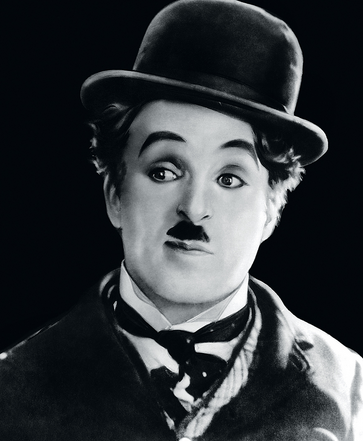
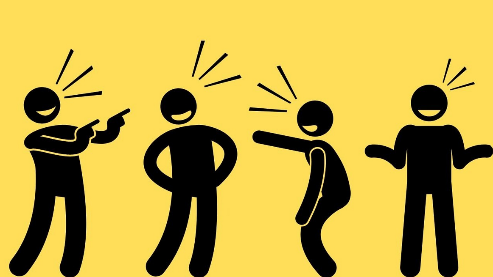

Що таке гумор?
Гумор - це властивість розуму робити з приватного об'єкта розвагу широкого кола людей. Це також може бути смішна ситуація, дія або вислів, які викликають сміх.
Різновиди гумору
- Саркастичний гумор: Це вживання іронії для висміювання або відтворення саркастичного ефекту. Люди, які використовують сарказм, можуть робити гострі або несподівані зауваження, приховуючи їх за маскою гумору.
- Сатиричний гумор: Це форма гумору, що використовується для висміювання недоліків або несправностей у суспільстві, політиці, культурі тощо. Сатира може бути вжиткована для висміювання чогось з метою покращення або привернення уваги до певної проблеми.
- Іронічний гумор: Це використання словесних або ситуаційних обертів, щоб створити несподіваний або контрастний ефект. Іронія може бути виражена через протилежність між сказаним і справжнім значенням.
- Фізичний гумор: Це використання комічних елементів в обличчі, тілі або жестах для створення смішної ситуації. Фізичний гумор може бути виражений через клоунаду, комічні вправи або невдалі ситуації.
- Соціальний гумор: Це використання гумору для висміювання або відтворення соціальних норм, стереотипів або культурних особливостей. Соціальний гумор може бути спрямований на підкреслення або вирішення соціальних проблем.
Найвідоміші гумористи
Джим кері
Чарлі чаплін
Робін Вільямс
Едді Мерфі
Гумор і здоров'я
Дослідження засвідчують, що гумор має надзвичайно позитивний вплив на наше здоров'я та емоційний стан. Сміх, як ключовий елемент гумору, викликає в організмі вивільнення ендорфінів - природних аналогів морфіну, які відомі як "гормони щастя". Ці ендорфіни не лише забезпечують почуття щастя та задоволення, але й допомагають зменшити відчуття болю та стресу. Крім того, сміх і гумор в цілому мають властивість зменшувати рівень гормону стресу - кортизолу, у крові. Високі рівні кортизолу можуть призвести до численних негативних ефектів на організм, таких як зниження імунної системи, погіршення сну та загальний стресовий стан. Отже, здатність викликати сміх і позитивні емоції через гумор може фактично допомагати захистити організм від негативних наслідків стресу. Крім того, регулярне відчуття радості та позитивних емоцій, що супроводжують гумор, може позитивно впливати на загальний настрій та психічне здоров'я. Люди, які часто сміються та переживають позитивні емоції, зазвичай мають кращу самооцінку, менше схильні до депресії та більш оптимістичний погляд на життя. Отже, гумор та сміх не тільки допомагають нам відчувати себе краще на ментальному та емоційному рівні, але й мають конкретний фізіологічний вплив на наше здоров'я. Регулярний дозований "дозор сміху" може стати простою та приємною частиною здорового способу життя.
